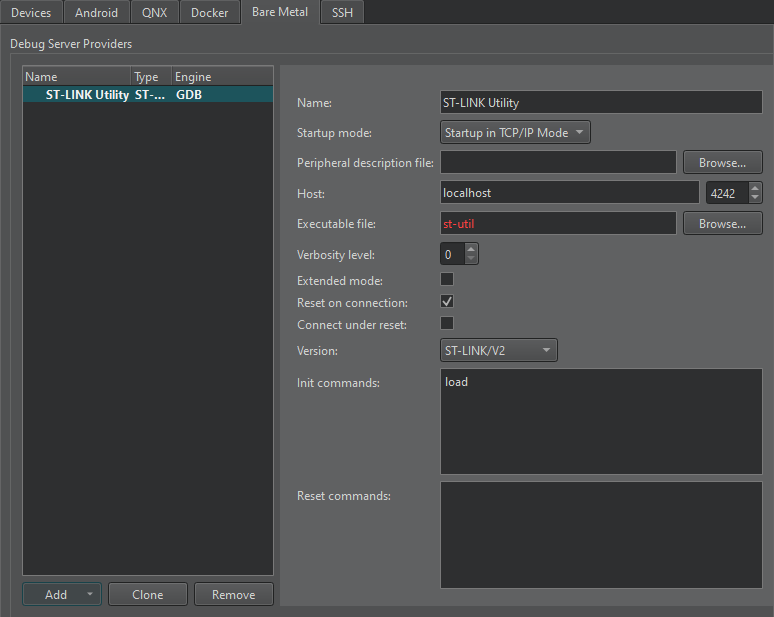

Set up St-Link
ST-LINK Utility is used for programming STM32 microcontrollers.

To set preferences for St-Link:
- Go to Preferences > Devices > Bare Metal.
- Select Add.
- Select St-Link.
- In Name, enter a name for the connection.
- In Startup mode, select the mode to start the debug server provider in.
- In Peripheral description file, specify a path to a file that describes the peripherals on the device.
- In Host, select the host name and port number to connect to the debug server provider.
- In Executable file, enter the path to the debug server provider executable.
- In Verbosity level, enter the level of verbose logging.
- Select Extended mode to continue listening for connection requests after the connection is closed.
- Select Reset on connection to reset the board when the connection is created.
- In Version, select the transport layer type supported by the device.
- In Init commands, enter the commands to execute when initializing the connection.
- In Reset commands, enter the commands to execute when resetting the connection.
- Select Apply to add the debug server provider.
See also How To: Develop for Bare Metal and Developing for Bare Metal Devices.